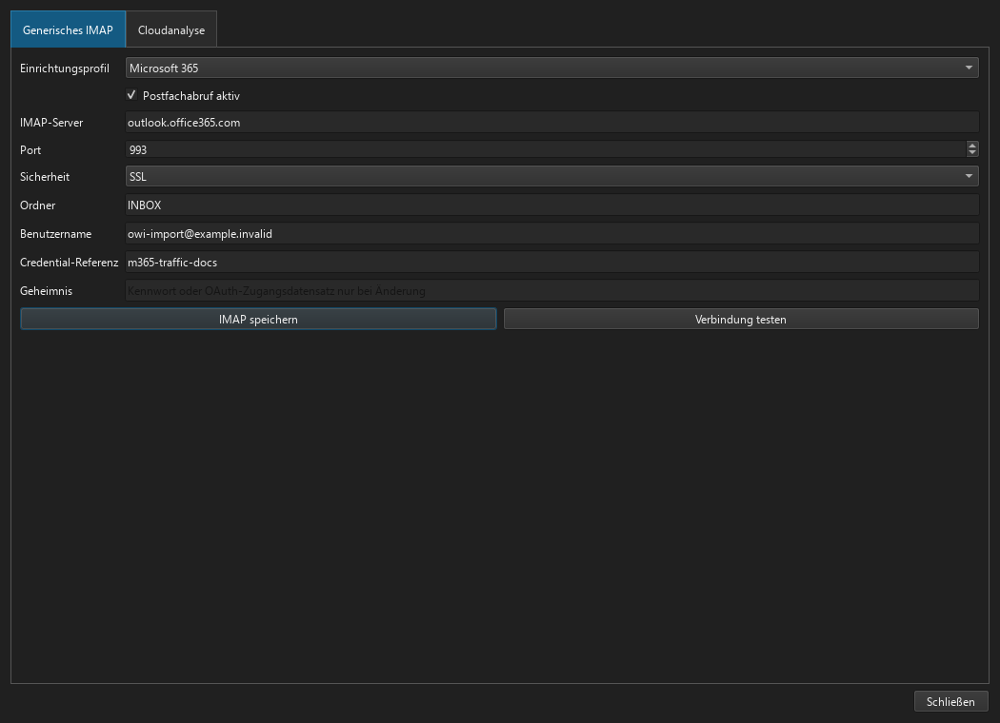
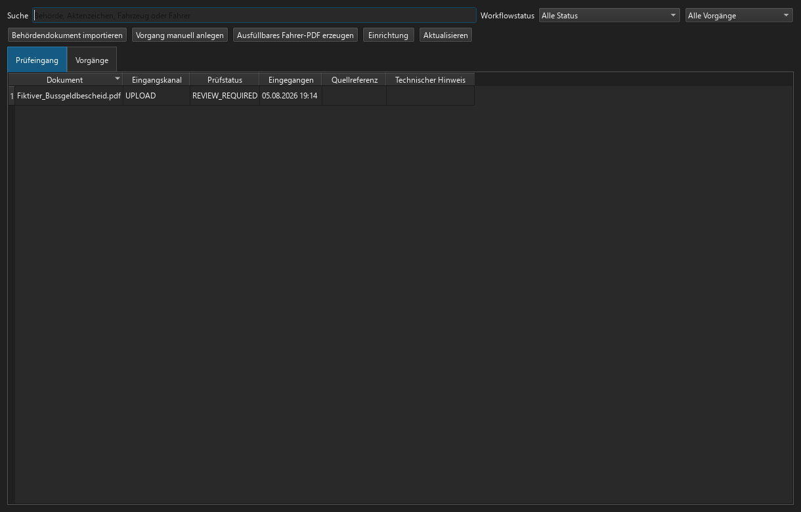
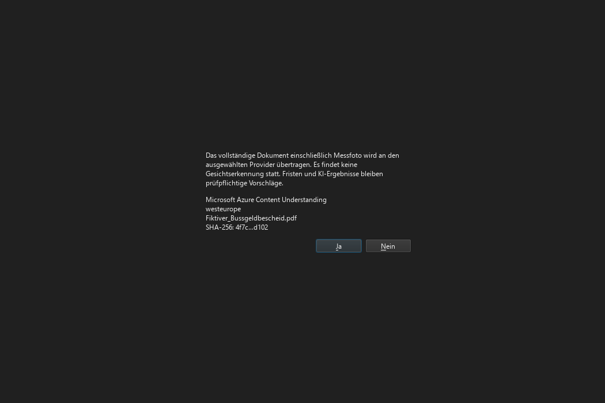
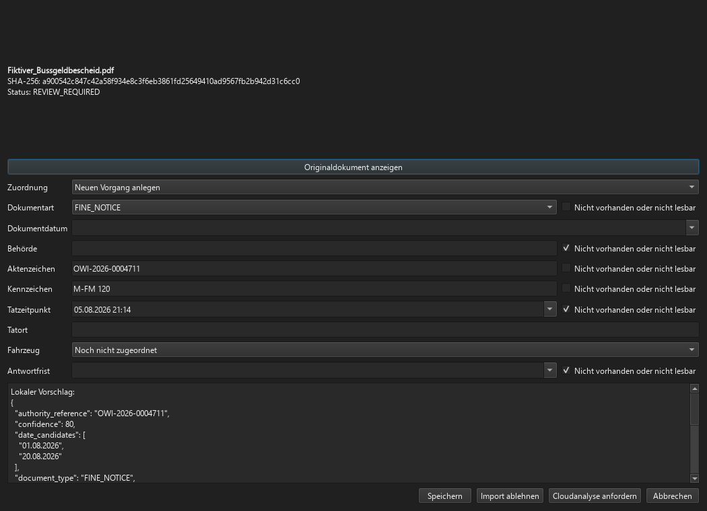
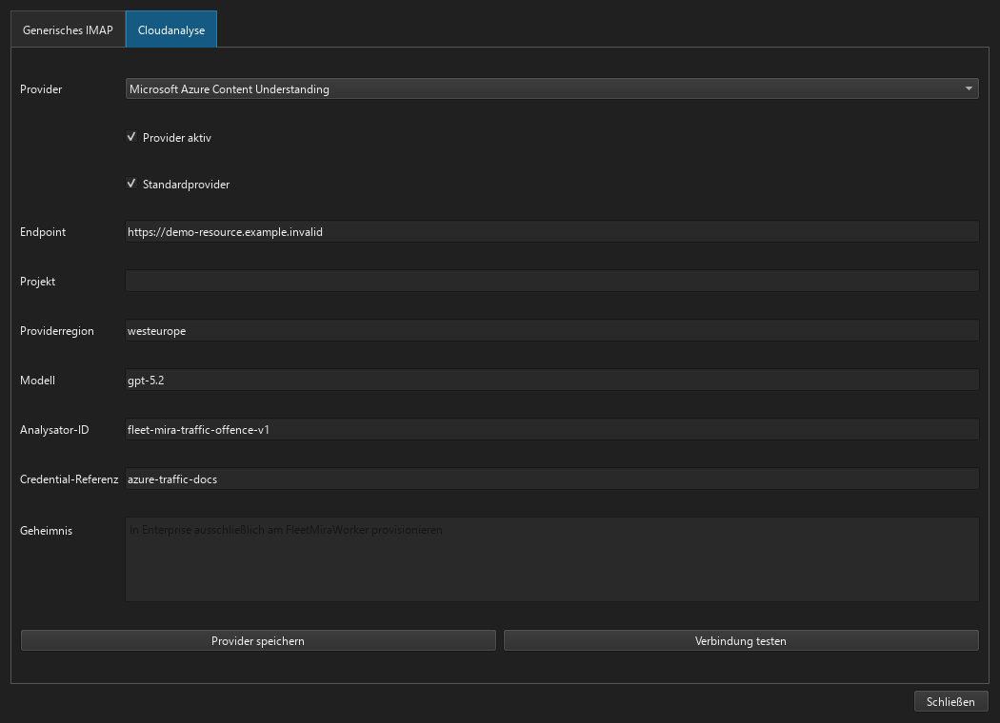
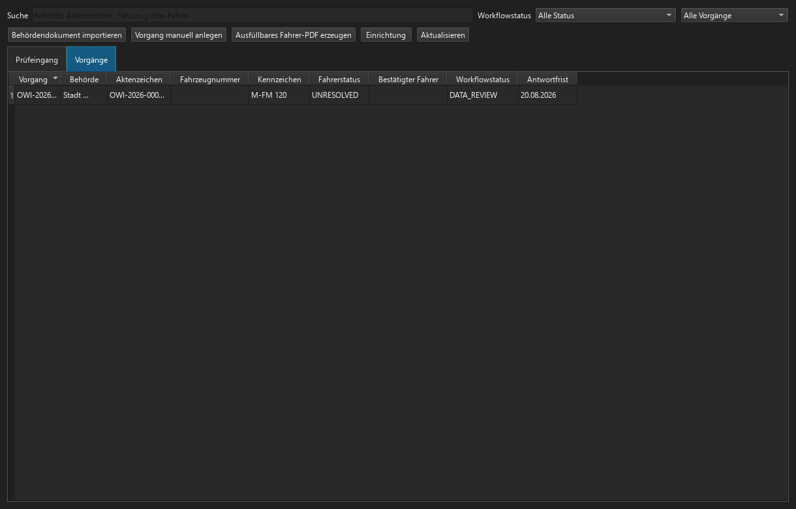

Verkehrsverstöße administrieren¶
Diese Anleitung richtet sich an FLEET-Mira-Administratoren. Das Modul ist in Pro und Enterprise über fleet.traffic_offences verfügbar. OCR- und KI-Ergebnisse sind ausschließlich prüfpflichtige Vorschläge; ohne die ausdrückliche Zustimmung eines berechtigten Benutzers wird kein Dokument an einen Cloudanbieter übertragen.
Version 1 verwendet ausschließlich generisches IMAP. POP3, JMAP, Microsoft Graph Mail API und Gmail API sind nicht implementiert; spätere Adapter können den protokollneutralen MailboxSourceAdapter ergänzen. Microsoft 365 Copilot ist keine Import- oder Extraktions-Engine. Lokaler Upload, Importordner und OCR funktionieren ohne Mail- oder Cloudanbieter.
1. Voraussetzungen, Lizenz und Berechtigungen¶
- Aktivieren Sie die Pro- oder Enterprise-Lizenz mit dem Feature
fleet.traffic_offences. - Weisen Sie operativen Benutzern
traffic_offences.import,traffic_offences.review_import,traffic_offences.cloud_analyze,traffic_offences.manageundtraffic_offences.readnach Bedarf zu. - Beschränken Sie
settings.manageauf Administratoren. Basic zeigt das Modul nicht an. - Prüfen Sie Datum, Uhrzeit und Region des Benutzerprofils; DatePicker und DateTimePicker verwenden die Benutzerregion unabhängig von der Sprache.
2. Dokumentarchiv, Backup und Aufbewahrung¶
Prüfen Sie unter Administration → Einstellungen den Dokumentarchivpfad und das Backupziel. Ein importiertes Original wird einmal als TRAFFIC_OFFENCE_IMPORT_ITEM unverändert mit SHA-256 archiviert. Nach der Bestätigung verweist das Vorgangsdokument auf dasselbe Archivobjekt. Sichern Sie Datenbank und Dokumentarchiv gemeinsam und testen Sie die Wiederherstellung. Legen Sie Aufbewahrung, Legal Hold und Löschfreigaben mit Datenschutz und Rechtsberatung fest.
3. Lokale OCR und Importordner¶
- Installieren Sie Tesseract mit den Sprachpaketen
deuundengsowie Poppler (pdftoppm) auf dem Workerhost. - Öffnen Sie Administration → Verkehrsverstöße und tragen Sie den dedizierten Importordner ein.
- Gewähren Sie dem Pro-Benutzer beziehungsweise dem Enterprise-Dienstkonto nur Lesen im Eingangsordner und Schreiben im FLEET-Mira-Datenstamm.
- Legen Sie eine Text-PDF, eine Scan-PDF und ein gedrehtes Bild ab. Alle müssen als Importobjekte im Prüfeingang erscheinen.
Text-PDFs werden direkt gelesen; Scans und Bilder werden lokal verarbeitet. Fehlende Fristen werden nicht errechnet. Ist kein Cloudprovider aktiv, wechselt ein erfolgreich lokal analysiertes Dokument direkt zu REVIEW_REQUIRED.
4. Generisches IMAP¶
Alle Anbieter verwenden GenericImapMailboxSource. FLEET Mira öffnet den konfigurierten Ordner read-only, verwendet BODY.PEEK[] und führt keine STORE-, MOVE-, COPY- oder DELETE-Operation aus.
- Richten Sie ein ausschließlich für Behördenpost und Fahrerrückläufe vorgesehenes Postfach ein.
- Öffnen Sie Administration → Verkehrsverstöße → Generisches IMAP.
- Wählen Sie ein Profil oder Other, und prüfen Sie Host, Port,
SSLoderSTARTTLS, Ordner und vollständigen Benutzernamen. - Vergeben Sie eine eindeutige Credential-Referenz. Geheimnisse werden nicht in SQLite/PostgreSQL gespeichert, sondern im DPAPI-Store des Pro-Benutzers beziehungsweise des FleetMiraWorker-Dienstkontos.
- Speichern Sie und führen Sie Verbindung testen aus. Der Test prüft TLS, Authentifizierung, Fähigkeiten, read-only Ordnerzugriff und UIDVALIDITY.
Unverschlüsselte Verbindungen werden abgewiesen. Dubletten werden über Mailbox-ID, UIDVALIDITY, UID, Message-ID sowie Hashes von Rohmail und Anhängen verhindert.
5. Microsoft 365 OAuth¶
Vorbelegung: outlook.office365.com, Port 993, SSL/TLS, XOAUTH2.
- Registrieren Sie eine Entra-Anwendung. Pro verwendet delegiert
IMAP.AccessAsUser.Allundoffline_access; Enterprise verwendetIMAP.AccessAsAppmit Administratorzustimmung. - Für Enterprise registrieren Sie den Service Principal zusätzlich in Exchange Online und begrenzen den Postfachzugriff über eine Application Access Policy.
- Hinterlegen Sie Benutzername und eine Credential-Referenz. Provisionieren Sie für Pro Client-ID, Refresh-Token und gegebenenfalls Client-Secret; für Enterprise Tenant-ID, Client-ID und Client-Secret im maschinengebundenen Worker-Store.
- Speichern und testen Sie. Benutzername/Kennwort und App-Passwörter werden für Microsoft 365 nicht angeboten.
Herstellerreferenz: Microsoft: IMAP/POP/SMTP mit OAuth authentifizieren.
6. Google Workspace OAuth¶
Vorbelegung: imap.gmail.com, Port 993, SSL/TLS, XOAUTH2.
- Aktivieren Sie IMAP gemäß der Workspace-Richtlinie und erstellen Sie einen OAuth-Client für Pro oder ein Dienstkonto für Enterprise.
- Pro provisioniert Client-ID und Refresh-Token. Enterprise aktiviert Domain-wide Delegation, erlaubt ausschließlich
https://mail.google.com/und provisioniert Dienstkonto-JSON plus delegierten Postfachbenutzer beim FleetMiraWorker. - Hinterlegen Sie vollständige Mailadresse, Credential-Referenz und Geheimnis; speichern und testen Sie.
Herstellerreferenz: Google: XOAUTH2 für IMAP.
7. Hetzner und andere Anbieter¶
Für Hetzner verwenden Sie mail.your-server.de, Port 993, SSL/TLS, die vollständige E-Mail-Adresse und das Postfachkennwort. Bei anderen Anbietern konfigurieren Sie Host, Port, Verschlüsselung, Ordner und PASSWORD oder XOAUTH2 frei. STARTTLS ist zulässig, Klartext-IMAP nicht. Siehe Hetzner E-Mail-Konfiguration und RFC 9051 (IMAP4rev2).
8. Azure Content Understanding¶
- Erstellen Sie eine Azure-AI-Ressource in der datenschutzrechtlich freigegebenen Region und notieren Sie Endpoint und API-Schlüssel beziehungsweise Entra-Credential.
- Öffnen Sie Administration → KI-Connector, wählen Sie
AZURE_CONTENT_UNDERSTANDING, tragen Sie Endpoint, Region, Modell und die Analysator-IDfleet-mira-traffic-offence-v1ein. - Provisionieren Sie das Geheimnis. In Enterprise bleibt nur die Credential-Referenz in PostgreSQL.
- Mit Verbindung testen wird der versionsgebundene Analysator angelegt/aktualisiert und abgerufen.
Referenzen: Analyzer reference, REST quickstart.
9. Gemini über Vertex AI¶
- Öffnen Sie Administration → KI-Connector, wählen Sie Google Gemini über Vertex AI und starten Sie Google-Vertex-Assistent….
- Der Assistent erläutert, wo die Projekt-ID in der Google-Cloud-Projektauswahl unter Projektinformationen steht. Wählen Sie ein kundeneigenes Projekt mit aktiver Abrechnung und aktivieren Sie die Vertex AI API; direkte Links zur Google Cloud Console und API-Seite sind enthalten.
- Erstellen Sie unter IAM & Verwaltung → Dienstkonten ein Dienstkonto mit
roles/aiplatform.useroder einer engeren benutzerdefinierten Rolle. Erzeugen Sie unter Schlüssel einen JSON-Schlüssel. - In Pro wählen Sie die unveränderte JSON-Datei aus oder legen sie per Drag-and-drop ab. FLEET Mira validiert und schützt den Inhalt, zeigt den privaten Schlüssel nicht an und speichert keinen Quelldateipfad. Enterprise provisioniert das JSON ausschließlich beim FleetMiraWorker.
- Die Credential-Referenz ist kein Google-Wert, sondern ein frei vergebener stabiler FLEET-Mira-Verweis ohne Kennwort oder Schlüssel; vorgeschlagen wird
vertex-traffic-offences-prod. - Der Assistent schlägt
europe-west4undgemini-2.5-flashvor. Beide Werte bleiben wegen regionaler Verfügbarkeit und Modelllebenszyklen editierbar. - Prüfen Sie die Zusammenfassung und lassen Sie die Verbindung nach dem Speichern testen. Structured Output verwendet das FLEET-Mira-JSON-Schema; Grounding, Google-Suche, Sitzungsfortsetzung und optionale Speicherung bleiben deaktiviert.
Referenz: Vertex AI Generative AI quickstart.
10. Zustimmung und Prüfeingang¶
Bei IMAP-Eingängen zeigt der Prüfeingang die aus dem From-Header ermittelte Absender-E-Mail-Adresse. Vorhandene Eingänge werden bei der Schemaaktualisierung aus der unverändert archivierten Rohmail ergänzt.
Nach lokaler Analyse übernimmt die Prüfmaske erkannte Werte unmittelbar in die fachlichen Formularfelder. Eine technische JSON-Rohansicht für lokale oder Cloudvorschläge wird dem Anwender nicht angezeigt; Analyseergebnisse und Fundstellennachweise bleiben intern in der Analysehistorie erhalten. Prüfstatus, Workflowstatus, Fahrerstatus und Dokumentart werden in der Sprache des angemeldeten Benutzers als verständliche Fachbezeichnungen angezeigt; die stabilen technischen Codes bleiben ausschließlich intern erhalten. Ein markierter Prüfvorgang lässt sich über Bearbeiten oder per Doppelklick erneut öffnen. Vor jedem Cloudauftrag bestätigt der Benutzer die vollständige Dokumentübertragung sowie die genannten Verarbeitungsbedingungen. Dateiname, SHA-256 und Providerregion werden im Zustimmungsdialog nicht wiederholt, bleiben aber in Konfiguration, Dokumentarchiv und Analysehistorie nachvollziehbar. Die Cloudanalyse läuft anschließend asynchron mit Fortschrittsanzeige; bei Erfolg werden der offene Prüfdialog und der Prüfeingang aktualisiert und eine Abschlussmeldung angezeigt. Provider- oder Workerfehler erzeugen einen sichtbaren Fehlerhinweis und bleiben als technischer Hinweis am Importobjekt erhalten. Ein Fehler löst keinen Wechsel zum anderen Provider aus. Sämtliche Formularfelder sind vor dem Speichern verpflichtend auszufüllen; Ausnahmen für nicht vorhandene oder unlesbare Angaben sind nicht vorgesehen. Eine zunächst leere Antwortfrist wird beim ersten Anklicken des Datepickers mit dem Tagesdatum vorbelegt. Ähnliche Aktenzeichen dürfen weiterhin nur manuell verbunden werden.
11. HTTPS-Fahrerportal¶
Öffnen Sie Administration → Verkehrsverstöße → Fahrerportal und tragen Sie die öffentliche HTTPS-Basis-URL, den Pfad zum TLS-Zertifikat und eine frei vergebene, stabile Credential-Referenz ein. Die Referenz enthält kein Geheimnis; sie verweist lediglich auf den geschützten Datensatz aus privatem Schlüssel, Sitzungsschlüssel und optionalem Schlüsselpasswort. Pro kann diese Werte in der Oberfläche benutzergebunden per DPAPI schützen. Bei Enterprise werden sie ausschließlich am FleetMiraWorker unter derselben Referenz maschinengebunden provisioniert und nicht in PostgreSQL gespeichert.
Veröffentlichen Sie das Portal ausschließlich per HTTPS im freigegebenen LAN/VPN. Prüfen Sie Einmaltoken, Ablauf, Uploadgrenzen und den Zugriff aus dem vorgesehenen Netz. Token werden nur gehasht gespeichert. Nach einer Änderung von Zertifikat oder Schlüssel starten Sie den Worker neu.
12. SMTP und täglicher Bericht¶
Konfigurieren und testen Sie SMTP sowie TO-/CC-Empfänger der Gruppe FLEET_MANAGER. Fahreranfragen werden als Workerjob traffic_offence_driver_notification versendet. Prüfen Sie mit einem Testvorgang, dass der Status erst nach erfolgreichem SMTP-Versand auf „Fahrerantwort ausstehend“ wechselt, Rohmail und PDF in der Verstoßakte erscheinen und ein Fehler als FAILED erhalten bleibt. Bei Enterprise darf der Client den Versand ausschließlich einreihen; der FleetMiraWorker führt ihn aus.
Vorschau, manueller Versand und automatischer Lauf des täglichen Berichts müssen dieselben vier Abschnitte liefern. Fehlgeschlagene Fahreranfragen gehören zu den technischen Zustellfehlern. Anschriften, Freitext, Tatdetails, Dokumentinhalte und Anlagen dürfen in der Berichtsmail nicht erscheinen.
13. End-to-End-Abnahme Pro¶
Importieren Sie je ein Dokument per Upload, Ordner und IMAP; prüfen Sie Hash-Deduplizierung, lokale OCR, eine ausdrücklich bestätigte Cloudanalyse, Fundstellen, regionale Datumsfelder, Vorgang/Fälligkeit, Fahrerberechnung, Bericht und 2×2-Widget. Kontrollieren Sie SQLite, In-Process-Worker und benutzergebundenen DPAPI-Store.
14. End-to-End-Abnahme Enterprise¶
Verwenden Sie eine disposable PostgreSQL-Datenbank. Der Enterprise Client darf nur Jobs einreihen; IMAP, OCR, Provideraufrufe und Fahrerberechnung müssen im FleetMiraWorker laufen. Prüfen Sie Credential-Referenzen, maschinengebundenen Secret Store, Lease/Idempotenz, Neustartwiederholung und die installierten UI-Szenarien.
15. Fehlerbehebung, Rotation und Offboarding¶
FAILEDbei lokaler OCR: Tesseract/Poppler, Dateirechte und Dateiformat prüfen.- IMAP-Anmeldung: TLS-Zertifikatskette, OAuth-Scopes, Consent, Postfachpolicy, UIDVALIDITY und Uhrzeit prüfen.
- Azure/Vertex: Region, Endpoint/Projekt, Rolle, Modell/Analysator und ausgehendes HTTPS prüfen; keine Dokumentinhalte in Tickets oder Logs kopieren.
- Bei Rotation neues Geheimnis unter derselben Referenz provisionieren, Verbindung testen und erst danach das alte Credential sperren.
- Beim Offboarding Polling und Provider deaktivieren, Tokens/Schlüssel beim Anbieter widerrufen, lokale/maschinengebundene Secrets entfernen und den Auditnachweis aufbewahren.
Die reproduzierbaren FLEET-Mira-Screenshots werden aus den stabilen Widget-IDs trafficOffenceSettingsPanel, trafficOffenceSettingsTabs, trafficOffenceImportInbox, trafficOffenceImportReviewDialog und trafficOffenceReviewOccurredAt erzeugt. Cloudportale werden bewusst nicht abgebildet.
Reproduzierbare Produktansichten¶







Erzeugen Sie alle Ansichten erneut mit python scripts/capture_traffic_offence_documentation.py. Die Datenbank, Dokumente, Behörden, Kennzeichen und Zugangsdaten dieses Laufs sind vollständig isolierte Dokumentationsmuster.